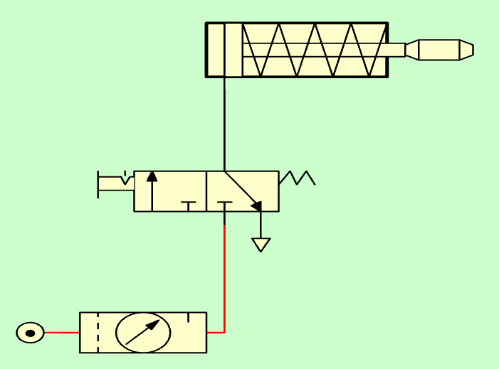
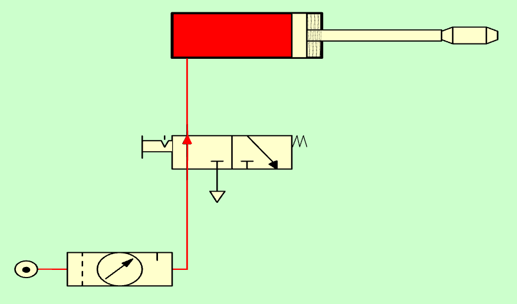
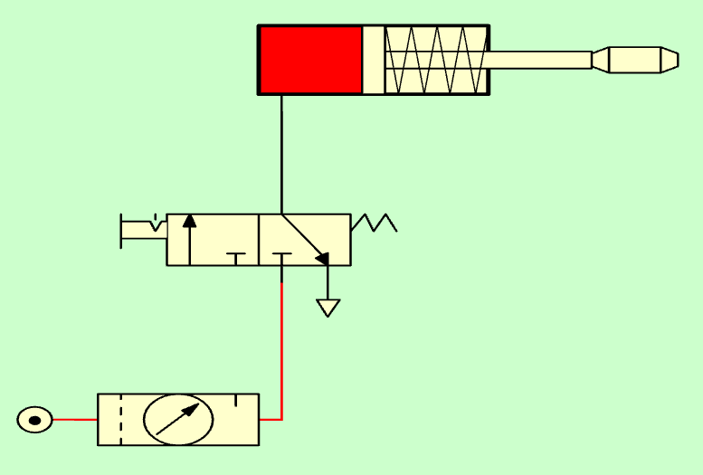
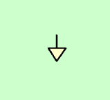

3. Single acting cylinder¶
A single acting cylinder is a cylinder whose rod comes out due to the compressed air injected into the rear part.
The entry movement of the stem is carried out thanks to a spring that has little force, so it is not useful for moving external loads.
This cylinder can exert force outwards, but it hardly exerts any force when moving inwards.
Single-acting cylinders are controlled by a 3/2 valve that can inject compressed air through one path or let the compressed air escape from the cylinder through that same path towards the atmosphere.
Below is the schematic at rest of the single-acting cylinder:
{kind=link}
When we activate the 3/2 valve, the air coming from the maintenance unit passes to the upper valve path and enters the rear part of the cylinder. As a consequence, the cylinder fills with air and the piston leaves the cylinder pushing the load in front of it:
{kind=link}
Finally, when the 3/2 valve is brought to rest, the compressed air inside the cylinder returns backwards and exits through the exhaust port of the 3/2 valve:
{kind=link}
Exercises¶
Explain the main characteristics of a single-acting cylinder.
Draw a diagram of a single-acting cylinder at rest, controlled by a 3/2 valve.
Draw a diagram of a powered single-acting cylinder, controlled by a 3/2 valve.
Simulates the operation of a single-acting cylinder controlled by a 3/2 valve.
What will happen if we remove the exhaust from the 3/2 valve? Simulates operation. Explain how the operation changes when removing the exhaust and explain why it behaves that way.
Pneumatic exhaust.¶
It uses two 3/2 valves to operate a single acting cylinder in the simulator. <../_static/flash/simulator-neumatica.html>`__ Only one of the valves will have an exhaust.
Explain how the circuit works:
{kind=link}